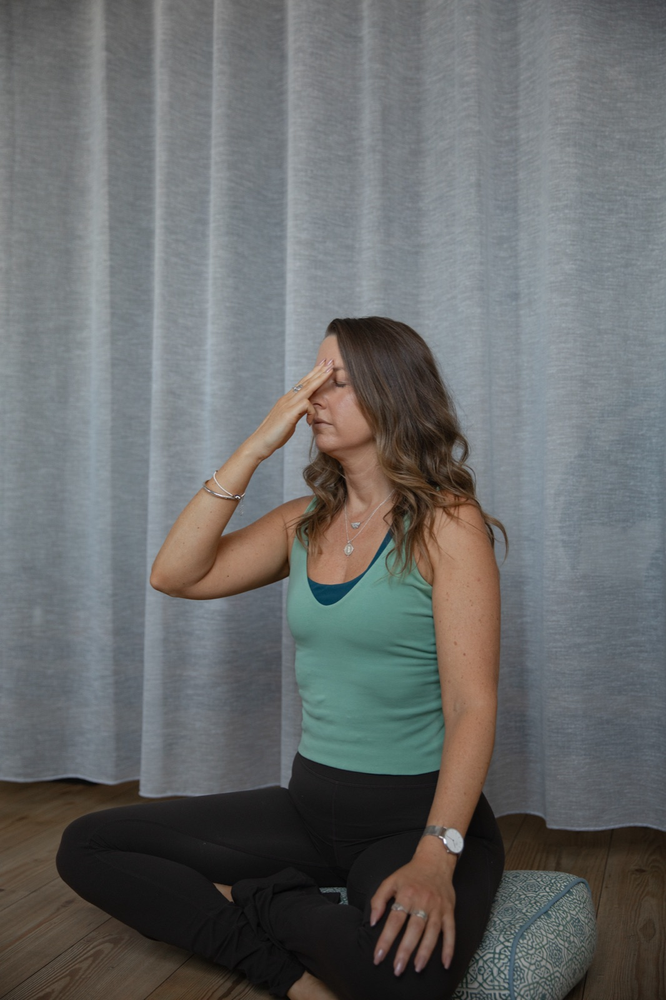

You'll breathe more than 20,000 times today. Almost none of those breaths will be on purpose.
That's a missed opportunity. Your breath is the fastest, cheapest and most portable tool you have for changing how you feel. No app, no equipment, no time off. Just you, and the next breath.

My breath journey
Breath was the first thing yoga really taught me.
- It started on the mat. I first stepped into a yoga class at a local gym when I was 22. I came for the stretch, but it was the slow, steady ujjayi breath that kept me coming back. It was the first time in my busy corporate life that my mind actually went quiet.
- It became a daily practice. Through my Yoga Teacher Training in 2019 I went deeper into pranayama, and breathwork moved off the mat and into everyday life: before meetings, on hard days, and every night before sleep.
- Then came holotropic breathwork. An hour of deep, connected breathing to music, lying down and fully guided. It was one of the most powerful experiences of my life. No movement, no words. Just breath, and everything it brought to the surface. I came out of it with a whole new respect for what our breath can do.
Today, breath is woven through everything I teach, from a five-minute reset in a boardroom to a two-hour immersive event. It's the tool I trust most, because it's always with us.
What is breathwork?
Breathwork is any practice where you change the way you breathe on purpose, to change how you feel.
- It's ancient. In yoga it's called pranayama, from the Sanskrit prana (life force) and ayama (to extend or draw out).
- It's been taught for thousands of years. Breath practices appear in the Upanishads and in Patanjali's Yoga Sutras, written down more than 1,500 years ago, and are set out in detail in the Hatha Yoga Pradipika (15th century).
- It's now being studied in labs. Neuroscientists, psychologists and elite sport are testing what the yogis described long ago.
When the breath is unsteady, the mind is unsteady. When the breath is still, the mind is still.
Hatha Yoga Pradipika, 15th centuryWhy it works: your breath talks to your brain
Breathing is the only automatic body system you can also control. You can't tell your heart to slow down or your stress hormones to settle, but you can change your breath, and your breath changes them.
- A direct line to your brain. Stanford researchers found a cluster of around 175 neurons in the brainstem that links breathing rhythm to the brain's alertness centre. Fast, choppy breathing signals "alert". Slow breathing signals "calm".
- Your exhale is the brake. Breathing in slightly speeds up your heart. Breathing out slows it. A longer exhale switches on the parasympathetic nervous system (rest and digest) through the vagus nerve.
- Nose breathing sharpens your mind. A 2016 Northwestern University study found that breathing in through the nose syncs activity in the amygdala and hippocampus, the brain's emotion and memory centres. People recognised fearful faces faster and remembered things better while inhaling through the nose.
- Slow breathing builds resilience. Breathing at around six breaths a minute raises heart rate variability (HRV), a marker of how well your body bounces back from stress.
Source: Yackle et al., Science, 2017 (Stanford University)
"The greatest indicator of life span wasn't genetics, diet, or the amount of daily exercise, as many had suspected. It was lung capacity."
James Nestor, Breath: The New Science of a Lost ArtNestor's bestselling book makes a simple case: most of us have forgotten how to breathe well. We breathe too fast, too shallow and too often through the mouth. His fixes are simple too: breathe through your nose, breathe slower, and breathe out longer.
The benefits
With regular practice, breathwork can help you:
- Stay calm under pressure, before a presentation, a hard conversation or a deadline
- Lower stress, anxiety and low mood
- Focus and think more clearly
- Sleep better by switching off before bed
- Lift your energy during the 3pm slump
- Manage your emotions, so you respond instead of react
Source: Fincham et al., Scientific Reports, 2023
Source: Balban et al., Cell Reports Medicine, 2023
How: five techniques to try today
Sit or stand comfortably. Breathe through your nose unless the technique says otherwise.
- Cyclic sighing (to calm down fast). Breathe in through the nose, take a second short sip of air on top, then a long, slow sigh out through the mouth. Repeat for 1 to 5 minutes.
- Box breathing (to focus). Breathe in for 4, hold for 4, breathe out for 4, hold for 4. Used by athletes and the military to stay steady under pressure.
- Long exhale (to switch off). Breathe in for 4, out for 6 to 8. Great before sleep or after a tough call.
- Alternate nostril breathing, or nadi shodhana (to balance). Close the right nostril, breathe in through the left. Close the left, breathe out through the right. Swap and repeat for 2 to 3 minutes.
- Humming bee breath, or bhramari (to quiet a busy mind). Breathe in through the nose, then hum gently as you breathe out. Feel the vibration. Repeat 5 to 10 times.
When to use it at work
- Before a big meeting or presentation: box breathing
- After a difficult email or call: cyclic sighing
- The 3pm slump: alternate nostril breathing
- Winding down after work: long exhale
The best part? Nobody needs to know you're doing it. Breathwork works in a meeting, on a train or at your desk.
Bring breathwork to your team
I run breathwork sessions for workplaces, conferences and offsites. They're practical and easy to follow, with no experience needed, and they give people tools they'll use long after the session ends.
Breathe in. Breathe out. Change everything.
Breathwork is safe for most people. Avoid strong breath holds and fast breathing techniques if you're pregnant or have a heart condition, high blood pressure, epilepsy or a history of panic attacks, and check with your doctor if you're unsure. Never practise breath holds in water or while driving. Intense practices like holotropic breathwork should only be done with a trained facilitator.